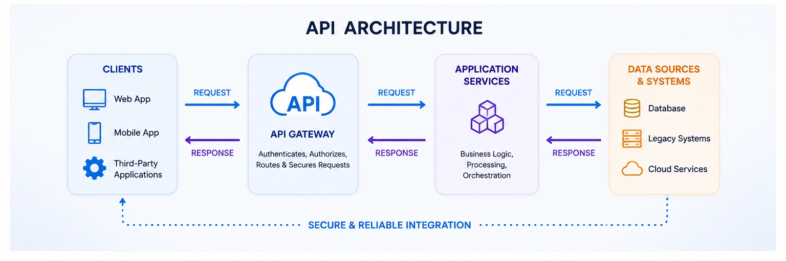

What is an API?
API stands for Application Programming Interface. An API allows different applications to communicate with each other securely and efficiently.
For example: when you use a food delivery app, the app communicates with payment services, maps and restaurant systems through APIs.

What is Integration?
Integration means connecting multiple systems, applications and data sources so they can work together.
Businesses use integration to connect:
- Websites
- Mobile applications
- Databases
- Cloud platforms
- Enterprise software
Why APIs & Integration Matter
Modern organizations rely on APIs and integrations to automate processes, improve customer experiences and share data between systems in real time.
Where MuleSoft Fits
MuleSoft is an enterprise integration platform that helps businesses connect applications, APIs and systems using reusable integrations.